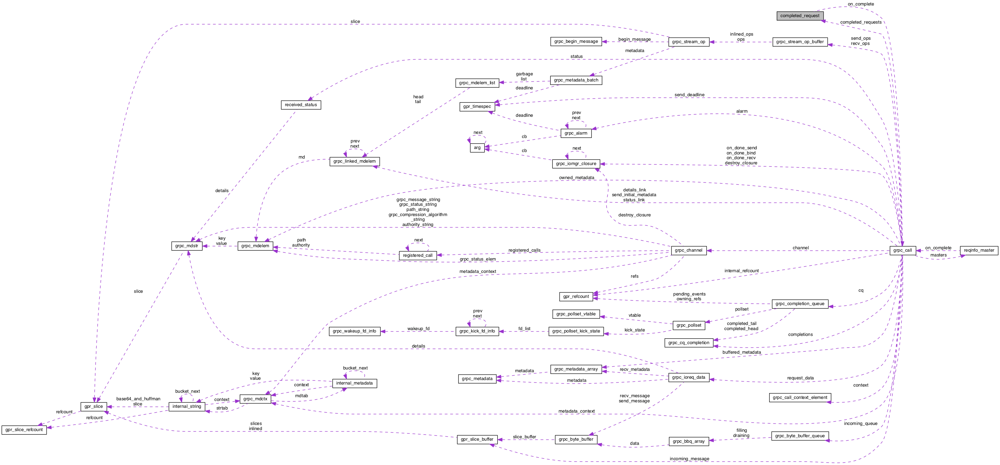

GRPC Core
0.10.0.0
Main Page
Data Structures
Files
Data Structures
Data Structure Index
Data Fields
Data Fields
completed_request Struct Reference
Collaboration diagram for completed_request:

[
legend
]
Data Fields
grpc_ioreq_completion_func
on_complete
void *
user_data
int
success
Field Documentation
grpc_ioreq_completion_func
completed_request::on_complete
int completed_request::success
void* completed_request::user_data
The documentation for this struct was generated from the following file:
src/core/surface/
call.c
Generated on Tue Jul 21 2015 14:49:07 for GRPC Core by
1.8.9.1
 1.8.9.1
1.8.9.1